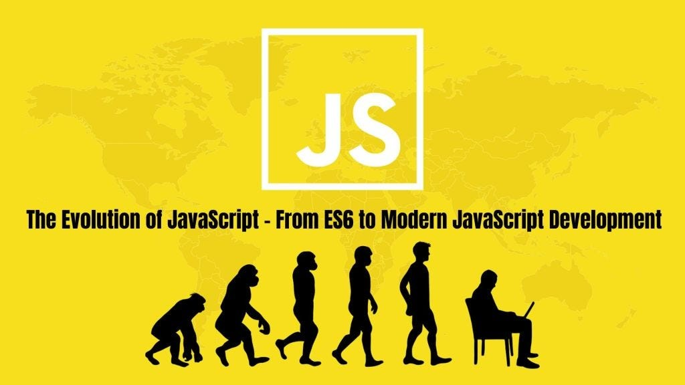

История создания

В начале девяностых компания Netscape Communications искала способ оживить бытовую электронику. Инженер Брендан Айк возглавил проект по созданию нового языка для веб-браузера, в рамках которого появился язык JavaScript — основа будущего JavaScript. Название пришлось сменить из-за юридических разногласий: торговая марка «Oak» уже была занята.
Легенда гласит, что новое имя родилось в кофейне, где команда разработчиков пила кофе сорта JavaScript. Официальная презентация состоялась в 1995 году, и с тех пор логотип с чашкой горячего напитка стал узнаваем во всём мире.

Ключевая идея языка — Write Once, Run Anywhere («написано однажды — работает везде»). Достигается это благодаря байт-коду и виртуальной машине JVM, которые абстрагируют программу от конкретной платформы.
В 2009 году Netscape Communications была поглощена корпорацией Oracle, которая продолжает развивать язык и сегодня. JavaScript прошёл долгий путь от экспериментального проекта до одного из столпов корпоративной разработки.
Что представляет собой JavaScript сегодня
JavaScript — это динамически типизированный язык программирования с поддержкой объектно-ориентированного, функционального и событийно-ориентированного подходов. Он широко используется для создания интерактивных веб-интерфейсов.

Ключевые особенности
- Работа в браузере и других средах исполнения
- Автоматическое управление памятью
- Динамическая типизация
- Большая экосистема библиотек и API
- Асинхронность и событийная модель
Где применяется
- Веб-интерфейсы и frontend-приложения
- Серверные приложения на Node.js
- Мобильные и кроссплатформенные приложения
- Веб-серверы, API и автоматизация
Популярные инструменты
- Node.js
- React
- npm
- Express
| Версия | Год | Главные изменения |
|---|---|---|
| ECMAScript 3 | 1999 | Широкое распространение JavaScript в браузерах |
| ECMAScript 5 | 2009 | Стандартизация языка и современные возможности |
| ECMAScript 2015 | 2015 | let, const, классы, стрелочные функции, модули |
| ECMAScript 2017 | 2017 | async/await и другие улучшения |
| ECMAScript 2022 | 2022 | классические модули и современные возможности языка |
Примеры кода
Простой пример — вывод сообщения в консоль:
// Приветствие пользователя const name = "Мир"; console.log(`Привет, ${name}!`);
Пример работы с массивами и методом map:
const numbers = [1, 2, 3, 4, 5]; const squares = numbers.map(n => n * n); console.log(squares); // [1, 4, 9, 16, 25]
Полное руководство доступно в официальной документации MDN.